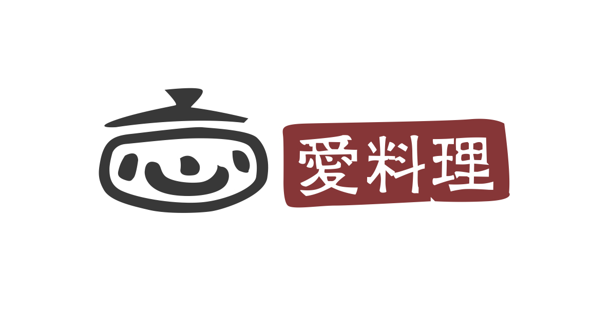

我 想 加 入 愛料理

我想加入愛料理，而且我認為我能擔任 rails 技術實習生
從去年開始，因為想將在學校內做的服務拓展並使之更具體地呈現，因此開始自學並找老師學習基本之 HTML、CSS 等語言，並且於上學期參與臺大黑客松團隊所設計的 web 課程，開始接觸 Ruby on Rails，目前專注於 Rails 的學習並期待未來以此參與專案學習
因為對網路、創業議題的熱忱，自去年開始自學 HTML , CSS , JAVASCRIPT 等，再透過課程接觸到 Ruby on Rails，而此個人官網即是透過所學工具自行建立的，也從中挖掘出自己的一份興趣。同時運用 Codecademy, RailsTutorial, Railscasts等網站、以及各種網路上的資訊自己主動學習。雖然我自己並非就讀資訊相關科系，且目前以 Rails 為主軸學習的深度並不足夠。但因為在學習過程裡挖掘許多樂趣並發現無數運用需仰賴程式語言等技術，也期待自己能把握機會鑽研相關實力，未來期待能有機會以這條路為發展目標。
而平日除了在校內修習課程及程式自學外，我也相當熱愛追蹤各類科技、網路、創業等等之新聞。追蹤這些消息已經形成我的例行工作， TechCrunch、The Verge、Inside 等每日瀏覽，此外自己也相當喜歡 ProductHunt、Sidebar 這些每天更新 的工具與資訊。我認為這些內容都相當有趣且實用，有助於拓展對產業的視野。
最後感謝您願意撥空瀏覽我的履歷，我相當渴望能獲得這次的實習機會，期待未來能進入愛料理擔任 Rails 技術實習生。也再次謝謝您，期待您的回覆。